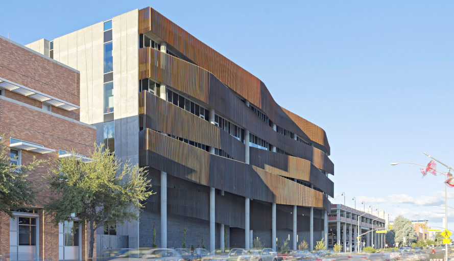
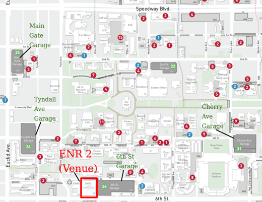
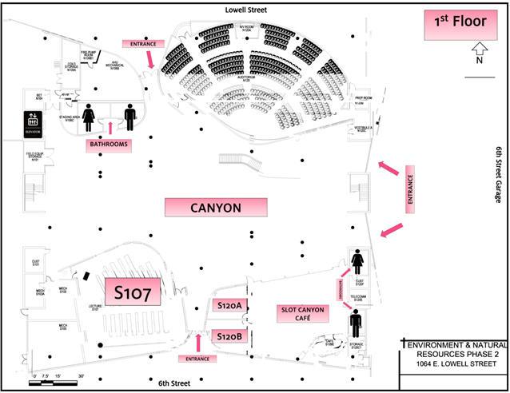
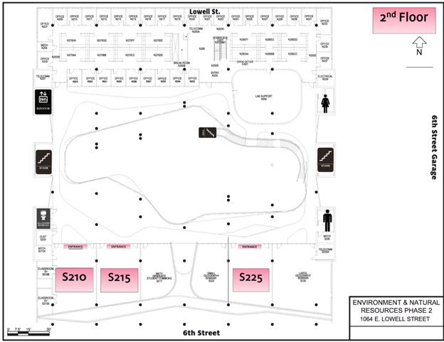

El Día 2023 Event Location
The department's annual student research symposium, El Día del Agua y la Atmósfera, is held in auditorium S107 (level 1) of the Environment and Natural Resources 2 (ENR2) Building on the University of Arizona campus.
Elevators are available on ground level. Guests may also use the external staircases (east and west sides of building, see map below) and enter through the northern Lowell Street entrance or the southern Sixth Street entrance. NOTE that this is a new and different location for El Dia than in some past years. The nearest parking is available at the 6th Street Garage adjacent to the Environment and Natural Resources (ENR2) Building.
Parking
1064 E Lowell St, Tucson, AZ 85719
Oral and poster presentations will take place on the ground floor in auditorium S107 and the courtyard (Canyon), with some additional programming on the second floor in S215 and S225
 